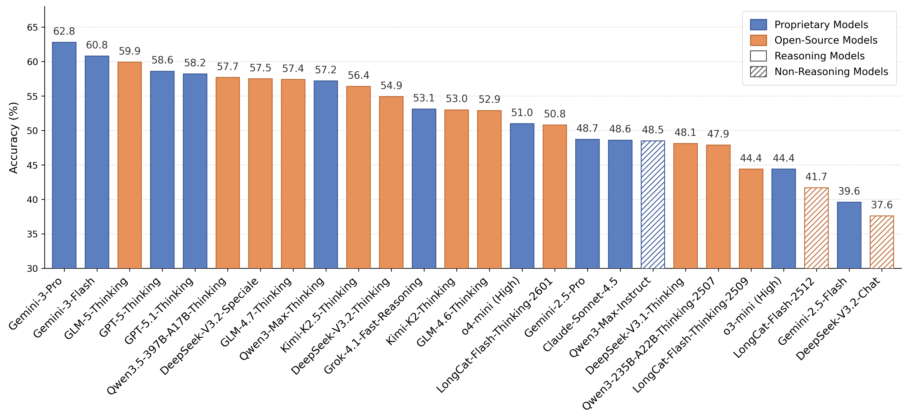
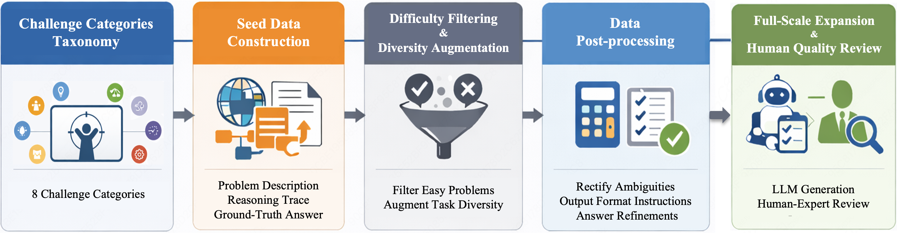
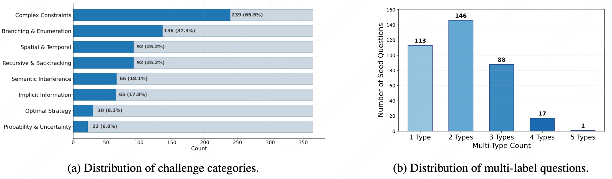
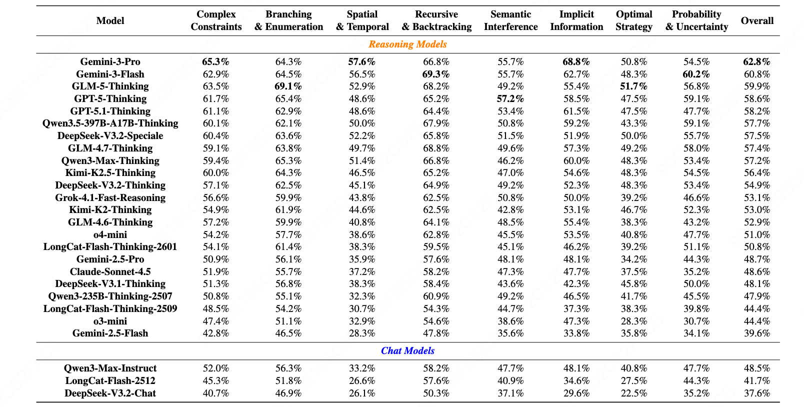
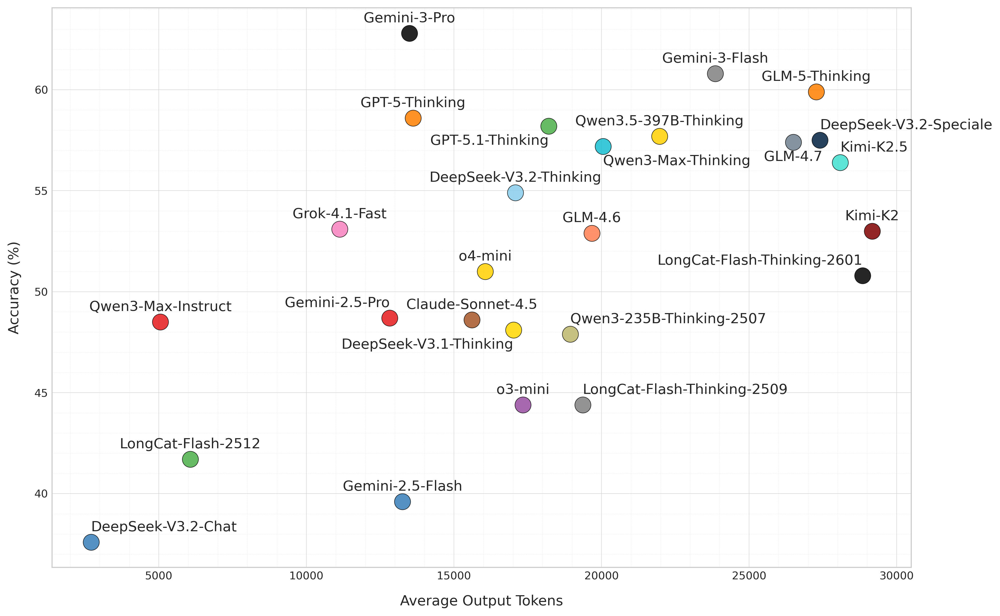
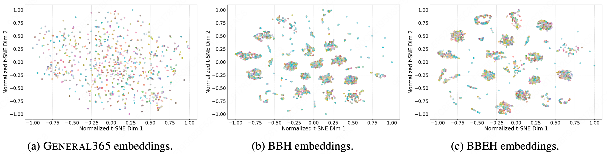
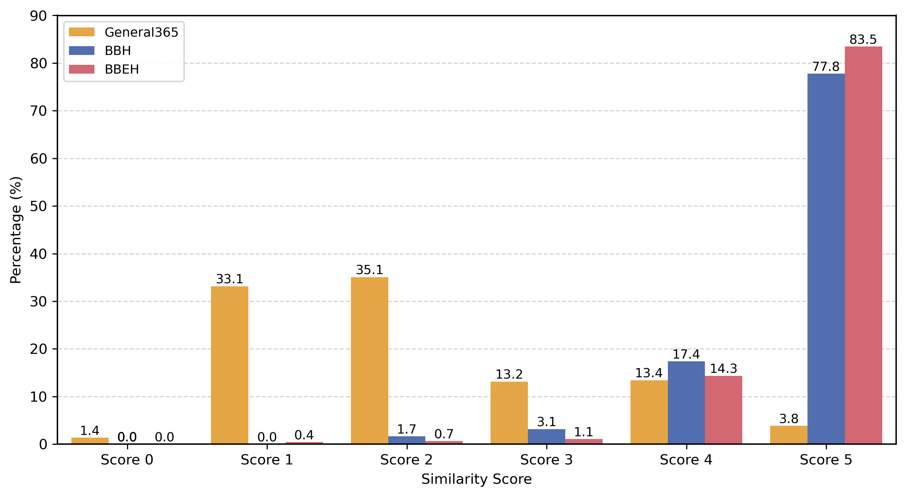

🧩 General365: Benchmarking General Reasoning in LLMs Across Diverse and Challenging Tasks
🏆Leaderboard🏆

Abstract
Contemporary large language models (LLMs) have demonstrated remarkable reasoning capabilities, particularly in specialized domains like mathematics and physics. However, their ability to generalize these reasoning skills to more general and broader contexts—often termed general reasoning—remains under-explored. Unlike domain-specific reasoning, general reasoning relies less on expert knowledge but still presents formidable reasoning challenges, such as complex constraints, nested logical branches, and semantic interference. To address this gap, we introduce GENERAL365, a benchmark specifically designed to assess general reasoning in LLMs. By restricting background knowledge to a K-12 level, GENERAL365 explicitly decouples reasoning from specialized expertise. The benchmark comprises 365 seed problems and 1,095 variant problems across eight categories, ensuring both high difficulty and diversity. Evaluations across 26 leading LLMs reveal that even the top-performing model achieves only 62.8% accuracy, in stark contrast to the near-perfect performances of LLMs in math and physics benchmarks. These results suggest that the reasoning abilities of current LLMs are heavily domain-dependent, leaving significant room for improvement in broader applications. We envision GENERAL365 as a catalyst for advancing LLM reasoning beyond domain-specific tasks toward robust, general-purpose real-world scenarios.
Challenge Categories & Construction Pipeline
A.Challenge Categories:To ensure high-level structural diversity and pinpoint the performance bottlenecks of current LLMs in general reasoning, we establish a conceptual taxonomy for the challenge covered by General365. Specifically, by synthesizing existing reasoning benchmarks and analyzing real-world inferential requirements, we have codified eight distinct challenge categories: Complex Constraints, Branching & Enumeration, Spatial & Temporal, Recursive & Backtracking, Semantic Interference, Implicit Information, Optimal Strategy and Probability & Uncertainty.
B.Construction Pipeline: Guided by the challenge categories taxonomy introduced above, we developed a multi-stage construction pipeline to ensure the diversity, complexity and quality of General365. The workflow consisted of four primary phases: (1) Seed Data Construction. (2) Difficulty Filtering & Diversity Augmentation. (3) Data Post-processing. (4) Full-scale Expansion & Human Quality Review.

Dataset Statistics
A.Distribution of challenge categories: Based on challenge categories taxonomy above, each seed problem in General365 is annotated with one or more challenge labels.
Figure (a) illustrates the overall distribution of challenge categories within General365
As shown, "Complex Constraints" emerges as the most predominant challenge, while "Probability & Uncertainty" accounts for the smallest proportion of the dataset.
B.Distribution of multi-label questions:
Figure (b) presents the distribution of multi-label instances.
Notably, nearly 70% of the problems are annotated with two or more challenge tags, further underscoring that General365 is characterized by high-difficulty, composite challenges rather than isolated reasoning tasks.

Main Results

Token Efficiency

Validation of Diversity
A.Qualitative Analysis of Semantic Space Coverage: To qualitatively assess the semantic breadth and distributional characteristics of General365, we project high-dimensional query embeddings into a 2D manifold. Specifically, we leverage the text-embedding-ada-002 model to encode queries into 1536-dimensional vectors, followed by t-SNE (Perplexity=30) for dimensionality reduction. For visual clarity, coordinates are normalized to the range [−1, 1]. As illustrated, General365 exhibits a substantially more uniform and expansive distribution across the semantic space compared to existing benchmarks. In contrast, BBH and BBEH manifest significant "local collapse," forming isolated, high-density clusters. This phenomenon suggests that while these benchmarks contain numerous samples, they are often confined to a narrow set of linguistic templates or logical skeletons. Conversely, the spatial dispersion of General365 underscores the efficacy of our high-quality seed strategy, where human-curated seed instances ensure semantic independence and minimize redundancy at the source.

B.Quantitative Analysis of LLM-based Reasoning Similarity Scoring: To rigorously quantify the logical redundancy within the benchmarks, we propose a pairwise similarity scoring method. Unlike qualitative visualization, this approach deconstructs the underlying reasoning primitives and logic evolution of task instances. Specifically, for each problem TA in General365, we retrieve its nearest neighbor TB in the embedding space to identify the most semantically similar candidate. Then we employ Gemini-3-Pro as an expert evaluator to conduct a deep comparison of the triplets (Problem, CoT, Final Answer) for each pair. The similarity is quantified on a scale of 0 to 5, where 0 denotes total logical independence and 5 indicates essentially identical reasoning skeletons.

BibTeX
@misc{an2025amobench,
title={AMO-Bench: Large Language Models Still Struggle in High School Math Competitions},
author={Shengnan An and Xunliang Cai and Xuezhi Cao and Xiaoyu Li and Yehao Lin and Junlin Liu and Xinxuan Lv and Dan Ma and Xuanlin Wang and Ziwen Wang and Shuang Zhou},
year={2025},
eprint={2510.26768},
archivePrefix={arXiv},
primaryClass={cs.CL},
url={https://arxiv.org/abs/2510.26768}
}